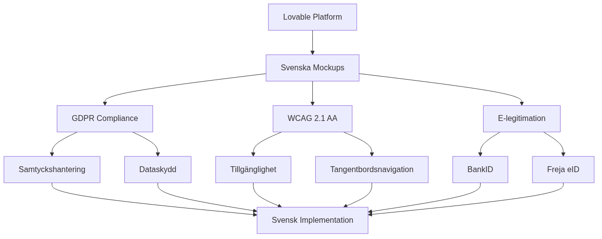

chapter 20: Use Lovable to create mockups for Swedish organizations

Inledning to Lovable
Lovable is a AI-driven utvecklingsplattform as revolutionerar how Swedish organizations can create interaktiva mockups and prototyper. by kombinera naturlig språkbehandling with kodgenerering enables Lovable snabb development of användargränssnitt as is anpassade for svenska compliance requirements and användarforväntningar.
For Swedish organizations means This a unique possibility to: - Accelerera prototyputveckling with fokus at svenska språket and cultural context - Ensure compliance from beginning of designprocessen - Integrera with svenska e-legitimationstjänster redan in mockup-fasen - Skapa användargränssnitt as follows svenska togänglighetsstandarder
step-for-step guide for implementation in Swedish organizations
Fas 1: Förberedelse and uppsättning
1. Miljöforberedelse
# Skapa utvecklingsmiljö for Swedish organizations
mkdir svenska-mockups
cd svenska-mockups
npm init -y
npm install @lovable/cli --save-dev
2. Svensk lokaliseringskonfiguration
// lovable.config.js
module.exports = {
locale: 'sv-SE',
compliance: {
gdpr: true,
wcag: '2.1-AA',
accessibility: true
},
integrations: {
bankid: true,
frejaeid: true,
elegitimation: true
},
region: 'sweden'
};
Fas 2: design for svenska användarfall
3. Definiera svenska användarresor
# svenska-userflows.yml
userflows:
e_government:
name: "E-service for myndighet"
steps:
- identification: "BankID/Freja eID"
- form_filling: "Digitalt formulär"
- document_upload: "Säker filuppladdning"
- status_tracking: "Ärendeuppföljning"
financial_service:
name: "Finansiell service"
steps:
- kyc_check: "Kundkännedom"
- risk_assessment: "Riskbedömning"
- service_delivery: "Tjänsteleverans"
- compliance_reporting: "Regelrapportering"
4. Lovable prompt for svensk e-forvaltning
// example at Lovable-prompt for svensk myndighetsportal
const sweGovPortalPrompt = `
Skapa a responsiv webbportal for svensk e-förvaltning with:
- Inloggning via BankID and Freja eID
- Flerspråkigt stöd (svenska, engelska, arabiska, finska)
- WCAG 2.1 AA-kompatibel design
- Tillgänglighetsfunktioner according to svensk lag
- Säker documentshantering with e-signatur
- Integrated ärendehantering
- Mobiloptimerad for svenska units
`;
Fas 3: technical integration
5. TypeScript-implementation for svenska services
// src/types/swedish-services.ts
export interface SwedishEIDProvider {
provider: 'bankid' | 'frejaeid' | 'elegitimation';
personalNumber: string;
validationLevel: 'basic' | 'substantial' | 'high';
}
export interface SwedishComplianceConfig {
gdpr: {
consentManagement: boolean;
dataRetention: number; // months
rightToErasure: boolean;
};
wcag: {
level: '2.1-AA';
screenReader: boolean;
keyboardNavigation: boolean;
};
pul: { // Personuppgiftslagen
dataProcessingPurpose: string;
legalBasis: string;
};
}
// src/services/swedish-auth.ts
export class SwedishAuthService {
async authenticateWithBankID(personalNumber: string): Promise<AuthResult> {
// BankID autentisering
return await this.initiateBankIDAuth(personalNumber);
}
async authenticateWithFrejaEID(email: string): Promise<AuthResult> {
// Freja eID autentisering
return await this.initiateFrejaAuth(email);
}
async validateGDPRConsent(userId: string): Promise<boolean> {
// GDPR-samtycke validation
return await this.checkConsentStatus(userId);
}
}
6. JavaScript-integration for myndighetssystem
// public/js/swedish-mockup-enhancements.js
class SwedishAccessibilityManager {
constructor() {
this.initializeSwedishA11y();
}
initializeSwedishA11y() {
// Implementera svenska tillgänglighetsguidelines
this.setupKeyboardNavigation();
this.setupScreenReaderSupport();
this.setupHighContrastMode();
}
setupKeyboardNavigation() {
// Tangentbordsnavigation according to svenska standarder
document.addEventListener('keydown', (e) => {
if (e.key === 'Tab') {
this.handleSwedishTabOrder(e);
}
});
}
setupScreenReaderSupport() {
// Skärmläsarstöd for svenska
const ariaLabels = {
'logga-in': 'Logga in with BankID or Freja eID',
'kontakt': 'Kontakta myndigheten',
'tillganglighet': 'Tillgänglighetsalternatives'
};
Object.entries(ariaLabels).forEach(([id, label]) => {
const element = document.getElementById(id);
if (element) element.setAttribute('aria-label', label);
});
}
}
Praktiska example for svenska sektorer
examples 1: E-forvaltningsportal for kommun
// kommun-portal-mockup.ts
interface KommunPortal {
services: {
bygglov: BuildingPermitService;
barnomsorg: ChildcareService;
skola: SchoolService;
socialstod: SocialSupportService;
};
authentication: SwedishEIDProvider[];
accessibility: WCAGCompliance;
}
const kommunPortalMockup = {
name: "Malmö Stad E-services",
design: {
colorScheme: "high-contrast",
fontSize: "adjustable",
language: ["sv", "a", "ar"],
navigation: "keyboard-friendly"
},
integrations: {
bankid: true,
frejaeid: true,
mobilebanking: true
}
};
examples 2: Finansiell compliance-service
# financial-compliance-mockup.yml
financial_service:
name: "Svensk Bank Digital Onboarding"
compliance_requirements:
- aml_kyc: "Anti-Money Laundering"
- psd2: "Payment Services Directive 2"
- gdpr: "General Data Protection Regulation"
- fffs: "Finansinspektionens föreskrifter"
user_journey:
identification:
method: "BankID"
level: "substantial"
risk_assessment:
pep_screening: true
sanctions_check: true
source_of_funds: true
documentation:
digital_signature: true
document_storage: "encrypted"
retention_period: "5_years"
Compliance-fokus for Swedish organizations
GDPR-implementation in Lovable mockups
// gdpr-compliance.ts
export class GDPRComplianceManager {
async implementConsentBanner(): Promise<void> {
const consentConfig = {
language: 'sv-SE',
categories: {
necessary: {
name: 'Nödvändiga cookies',
description: 'Krävs for websiteens grundfunktioner',
required: true
},
analytics: {
name: 'Analyskakor',
description: 'Hjälper oss förbättra websiteen',
required: false
},
marketing: {
name: 'Marknadsföringskakor',
description: 'For personaliserad marknadsföring',
required: false
}
}
};
await this.renderConsentInterface(consentConfig);
}
async handleDataSubjectRights(): Promise<void> {
// Implementera rätt to radering, portabilitet etc.
const dataRights = [
'access', 'rectification', 'erasure',
'portability', 'restriction', 'objection'
];
dataRights.forEach(right => {
this.createDataRightEndpoint(right);
});
}
}
WCAG 2.1 AA-implementation
// wcag-compliance.js
class WCAGCompliance {
constructor() {
this.implementColorContrast();
this.setupKeyboardAccess();
this.addTextAlternatives();
}
implementColorContrast() {
// Säkerställ minst 4.5:1 kontrast for normal text
const colors = {
primary: '#003366', // Mörk blå
secondary: '#0066CC', // Ljusare blå
background: '#FFFFFF', // Vit bakgrund
text: '#1A1A1A' // Nästan svart text
};
this.validateContrastRatios(colors);
}
setupKeyboardAccess() {
// all interaktiva element should be tangentbordstillgängliga
const interactiveElements = document.querySelectorAll(
'button, a, input, select, textarea, [tabindex]'
);
interactiveElements.forEach(element => {
if (!element.hasAttribute('tabindex')) {
element.setAttribute('tabindex', '0');
}
});
}
}
Integration with svenska e-legitimationstjänster
// e-legitimation-integration.ts
export class SwedishELegitimationService {
async integrateBankID(): Promise<BankIDConfig> {
return {
endpoint: 'https://appapi2.test.bankid.com/rp/v5.1/',
certificates: 'svenska-ca-certs',
environment: 'production', // or 'test'
autoStartToken: true,
qrCodeGeneration: true
};
}
async integrateFrejaEID(): Promise<FrejaEIDConfig> {
return {
endpoint: 'https://services.prod.frejaeid.com',
apiKey: process.env.FREJA_API_KEY,
certificateLevel: 'EXTENDED',
language: 'sv',
mobileApp: true
};
}
async handleELegitimation(): Promise<ELegitimationConfig> {
// Integration with e-legitimationsnämndens services
return {
samlEndpoint: 'https://eid.elegnamnden.se/saml',
assuranceLevel: 'substantial',
attributeMapping: {
personalNumber: 'urn:oid:1.2.752.29.4.13',
displayName: 'urn:oid:2.16.840.1.113730.3.1.241'
}
};
}
}
technical integration and architecture as code best practices
Workflow-integration with svenska utvecklingsenvironments
# .github/workflows/swedish-compliance-check.yml
name: Svenska Compliance Check
on: [push, pull_request]
jobs:
accessibility-test:
runs-on: ubuntu-latest
steps:
- uses: actions/checkout@v3
- name: Install dependencies
run: npm install
- name: Run WCAG tests
run: |
npm run test:accessibility
npm run validate:contrast-ratios
- name: Test Swedish language support
run: |
npm run test:i18n:sv
npm run validate:swedish-content
- name: GDPR compliance check
run: |
npm run audit:gdpr
npm run check:data-protection
Performance optimization for svenska user
// performance-optimization.ts
export class SwedishPerformanceOptimizer {
async optimizeForSwedishNetworks(): Promise<void> {
// Optimera for svenska nätverksförhållanden
const optimizations = {
cdn: 'stockholm-region',
imageCompression: 'webp',
minification: true,
lazy_loading: true,
service_worker: true
};
await this.applyOptimizations(optimizations);
}
async implementProgressiveLoading(): Promise<void> {
// Progressiv laddning for långsamma anslutningar
const criticalPath = [
'authentication-components',
'gdpr-consent-banner',
'accessibility-controls',
'main-navigation'
];
await this.loadCriticalComponents(criticalPath);
}
}
Summary and next step
The modern Architecture as Code methodology represents framtiden for infrastructure management in Swedish organizations. Lovable offers Swedish organizations a kraftfull plattform to create compliance-withvetna mockups and prototyper. by integrera svenska e-legitimationstjänster, implement WCAG 2.1 AA-standarder and follow GDPR-guidelines from beginning, can organisationer:
- Accelerera development process with AI-driven kodgenerering
- Ensure compliance redan in mockup-fasen
- Forbättra togänglighet for all svenska user
- Integrera svenska services that BankID and Freja eID
Rekommenderade next step:
- Pilotprojekt: Starta with A smaller projekt to validate approach
- Teamutbildning: Utbilda Developers in Lovable and svenska compliance-requirements
- Processintegration: Integrera Lovable in existing utvecklingsprocesser
- Continuous improvement: Etablera feedback-loopar for användbarhet and compliance
Viktiga resurser: - Digg - Guidance for webbtillgänglighet - Datainspektionen - GDPR-vägledning - E-legitimationsnämnden - WCAG 2.1 AA Guidelines
by follow This guide can Swedish organizations effektivt use Lovable to create mockups as not only is funktionella and användarvänliga, without also meets all relevanta svenska and europeiska compliance-requirements.